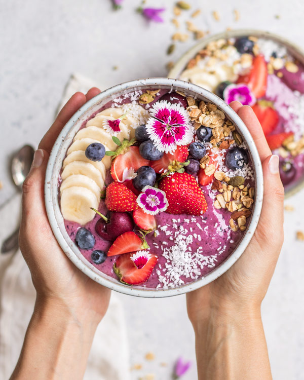

Tropical Fruit Acai Bowl
Açaí na tigela is a typical Brazilian dish made of frozen and mashed açaí palm fruit. It is served as a smoothie in a bowl or glass, and is commonly topped with granola and banana, and then mixed with other fruits and guaraná syrup.